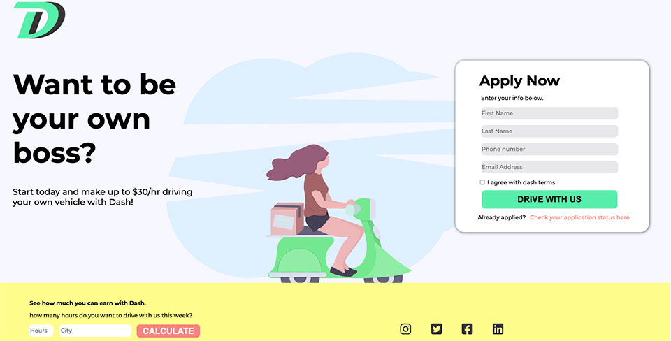

Landing page
A Dash landing page that is responsive on all platforms. It runs on a mobile, tablet, and desktop pretty smoothly. This landing page includes a form, a calculation section, and a beautiful scooter background. This landing page is done by coding in Visual Studio Code using HTML and CSS.
Portrait photography
This was our portrait final assignment in photography, I really loved doing it as i felt like I can send a message to the world through a picture as is it aimed toward capturing the personality of a person or group of people by using effective lighting, backdrops, and poses.